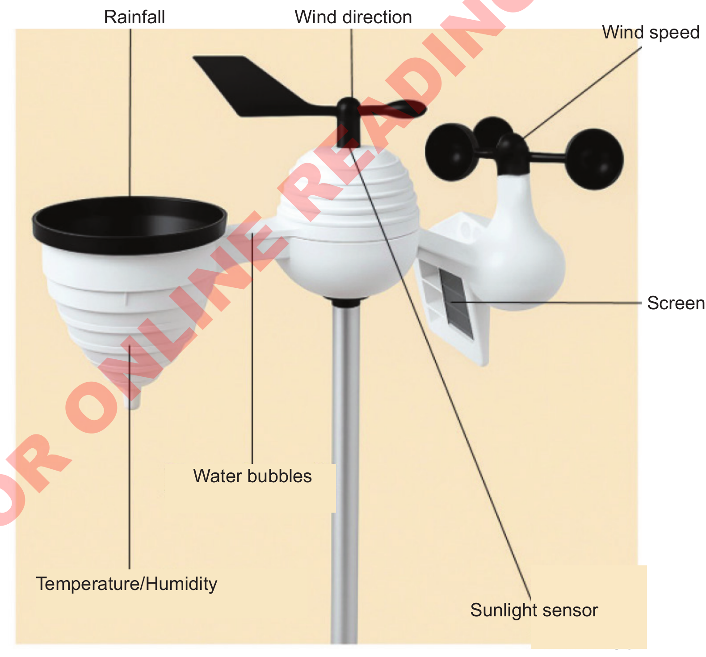

Weather data logger
A weather data logger is a device that collects and stores weather information automatically for a certain period for further analysis. This device is used to monitor and record weather such as temperature, humidity, wind speed and direction, rainfall, atmospheric pressure, and sunlight using sensors for each element.
The weather data logger can operate 24 hours a day without supervision and provides accurate records for the scheduled time. The collected data is stored in a digital format on a USB or SD card, which can be downloaded or sent for further analysis. This device is often used by weather authorities, in agriculture, for climate change research, and environmental monitoring. Figure 13 shows a weather data logger.

Figure 13: Weather station data logger
In Tanzania, some weather stations use outdated weather recording instruments. However, due to advances in science and technology, these stations are being upgraded from manual to automated weather stations that use modern equipment to record and store weather data.
Measuring and recording weather is important because it helps us understand the weather for a specific day or period. This enables individuals to plan their activities effectively and take environmental precautions. Furthermore, long-term weather measurements help identify the climate of different regions.